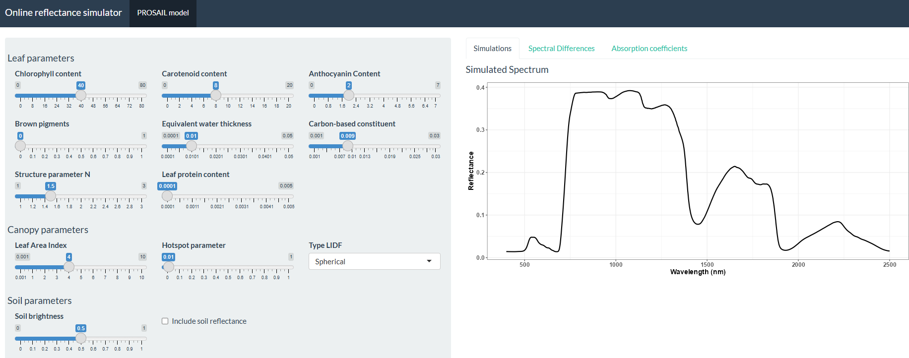

ToolsRTM package
The ToolsRTM package provides a comprehensive suite of tools for simulating canopy reflectance using various radiative transfer (RT) models at multiple satellite resolutions. Currently in the testing phase, this package is designed to facilitate detailed simulations, enabling versatile and accurate analyses of canopy reflectance characteristics.
For canopy-level simulations, the package features models such as INFORM, fourSAIL, and fourSAIL2. When it comes to leaf-level simulations, it includes the PROSPECT model (with D and PRO variants), Liberty, and FLUSPECT (B-Cx). These models empower users to conduct sophisticated simulations that capture the intricate dynamics of reflectance behavior in both leaf and canopy contexts.
Additionally, the SPART model (Soil-Plant-Atmosphere Radiative Transfer model) is tailored for satellite measurements in the solar spectrum. It integrates three computationally efficient RT models: the BSM model for soil, PROSAIL for vegetation canopies, and SMAC for the atmosphere. These components are interconnected using the four-stream theory and the adding method, allowing SPART to simulate directional top-of-atmosphere (TOA) spectral observations. This approach accounts for significant effects, such as sun-observer geometries and the non-Lambertian reflectance of the land surface.
This package specifically simulates the MARMIT (Multilayer rAdiative tRansfer Model of soIl reflecTance), a radiative transfer model that predicts the spectral reflectance of bare soil across the solar domain, from 400 nm to 2500 nm with a 1 nm resolution, based on its surface water content. The high-level get.marmit.rsoil() wrapper (built on get.marmit1/get.marmit2) loads a soil’s dry reference spectrum and runs MARMIT directly.
Only the Bablet 2016 soil database ships with the package, to keep install size small. The other 7 MARMIT databases (Dupiau 2020, Humper 2015, Lesaignoux 2008, Liu 2002, Lobell 2002, Marcq 2012, Philpot 2014) live in this monorepo’s own databases/ folder (repo root, ~200MB total). Point get.marmit.rsoil() at it directly with db_root, no copying required:
soil <- ToolsRTM::get.marmit.rsoil(database = "Liu_2002", id = 1, db_root = "databases")(run from the repo root, or pass an absolute path to databases/).
For more information, please visit: MARMIT GitLab

Fig. 1. Simulations performed with ToolsRTM Package for several radiative transfer models .
ToolsRTM is one library within RTM-Suite, which links both the R packages (ToolsRTM, SCOPEinR) and their Python ports (toolsrtm, scopeinpython) behind one common site — with reference manuals, worked tutorials, and runnable example pipelines for both languages side by side.

Fig. 2. The RTM-Suite website — see Documentation for R/Python reference manuals, Tutorials for step-by-step walkthroughs (R and Python side by side), and Examples for copy-paste runnable code with real generated figures.
Installation
ToolsRTM requires R 4.3 or newer. Install the development version directly from GitLab:
if (!requireNamespace("remotes", quietly = TRUE)) {
install.packages("remotes")
}
if (!requireNamespace("ToolsRTM", quietly = TRUE)) {
remotes::install_gitlab("caminoccg/toolsrtm", upgrade = "never")
}Alternatively, install a downloaded source archive:
install.packages(
"path/to/toolsrtm-main.tar.gz",
repos = NULL,
type = "source"
)Check the installed version:
packageVersion("ToolsRTM")The version described by this README is 0.62.5.
Quick example
The following example creates a small lookup table and runs PROSPECT-PRO coupled to fourSAIL. Both getLUT() and simulate_RTM() are exported by the current package.
inputs <- ToolsRTM::inputsPROSAIL
lut <- as.data.frame(
ToolsRTM::getLUT(inputs = inputs, nLUT = 30, setseed = 1234)
)
rsoil <- rep(0.2, 2101)
simulation <- ToolsRTM::simulate_RTM(
inputLUT = lut[1, , drop = FALSE],
rsoil = rsoil,
leaf.model = "PROSPECT-PRO",
canopy.model = "fourSAIL"
)SCOPEinR
Install SCOPEinR when the workflow requires the SCOPE model. ToolsRTM is installed first because SCOPEinR imports it.
if (!requireNamespace("remotes", quietly = TRUE)) {
install.packages("remotes")
}
remotes::install_gitlab("caminoccg/toolsrtm", upgrade = "never")
remotes::install_gitlab("caminoccg/scopeinr", upgrade = "never")
packageVersion("SCOPEinR")For an offline installation, replace the second install_gitlab() call with:
install.packages(
"path/to/scopeinr-main.tar.gz",
repos = NULL,
type = "source"
)Manuals and RTM-Suite resources
| Resource | Description |
|---|---|
| RTM-Suite documentation | Entry point for the complete R suite |
| ToolsRTM reference | Function reference and package articles |
| Course pipeline | Simulation, spectral convolution and inversion |
| Model comparison and sensitivity | Comparison and sensitivity workflows |
| SCOPEinR reference | SCOPE model documentation |
| Tutorials | Reproducible R tutorials included in RTM-Suite |
| Pipeline scripts | Adaptable simulate-to-invert workflows |
Interactive application
Use Apps/RTMs (run locally via shiny::runApp("Apps/RTMs")) to configure models and inspect simulations interactively, no code required. Its source lives alongside the rest of RTM-Suite; the Shiny application is not launched through the core ToolsRTM API.

Fig. 3. Interactive reflectance simulator using PROSAIL model based on shiny app.
Citation of the main radiative transfer models
For further details on the the radiative transfer modelsl, please refer to the original publications by the authors.
PROSPECT model
Féret J-B, Gitelson AA, Noble SD & Jacquemoud S, 2017. PROSPECT-D: Towards modeling leaf optical properties through a complete lifecycle. Remote Sensing of Environment, 193, 204–215. https://doi.org/10.1016/j.rse.2017.03.004
Féret, J.B., Berger, K., de Boissieu, F., Malenovský, Z., 2021. PROSPECT-PRO for estimating content of nitrogen-containing leaf proteins and other carbon-based constituents. Remote Sens. Environ. 252. https://doi.org/10.1016/j.rse.2020.112173
Jacquemoud S, Baret F, Hanocq J-F, 1992. Modeling spectral and bidirectional soil reflectance. Remote Sensing of Environment, 41, 123–132. https://doi.org/10.1016/0034-4257(92)90072-R
Jacquemoud, S., Baret, F., 1990. PROSPECT: a model of leaf optical properties spectra. Remote Sens. Environ. 34, 75–91. https://doi.org/10.1016/0034-4257(90)90100-Z.
More info: http://teledetection.ipgp.fr/prosail/
FLUSPECT model
Vilfan, N., van der Tol, C., Muller, O., Rascher, U., Verhoef, W., 2016. Fluspect-B: A model for leaf fluorescence, reflectance and transmittance spectra. Remote Sens. Environ. 186, 596?615. doi:10.1016/j.rse.2016.09.017
Liberty model
Dawson, T. P., Curran, P. J., & Plummer, S. E. (1998). LIBERTY—Modeling the Effects of Leaf Biochemical Concentration on Reflectance Spectra. Remote Sensing of Environment, 65(1), 50–60. https://doi.org/10.1016/S0034-4257(98)00007-8
Di Vittorio, A. V. (2009). Enhancing a leaf radiative transfer model to estimate concentrations and in vivo specific absorption coefficients of total carotenoids and chlorophylls a and b from single-needle reflectance and transmittance. Remote Sensing of Environment, 113(9), 1948–1966. https://doi.org/10.1016/j.rse.2009.05.002
fourSAIL & fourSAIL-2 models
Verhoef W & Bach H, 2007. Coupled soil–leaf-canopy and atmosphere radiative transfer modeling to simulate hyperspectral multi-angular surface reflectance and TOA radiance data. Remote Sensing of Environment, 109:166-182. doi:10.1016/j.rse.2006.12.013
Verhoef W, Jia L, Xiao Q & Su Z, 2007. Unified optical-thermal four-stream radiative transfer theory for homogeneous vegetation canopies. IEEE Transactions in Geosciences and Remote Sensing, 45:1808–1822. https://doi.org/10.1109/TGRS.2007.895844 PROSAIL
Jacquemoud S, Verhoef W, Baret F, Bacour C, Zarco-Tejada PJ, Asner GP, François C & Ustin SL, 2009. PROSPECT+ SAIL models: A review of use for vegetation characterization. Remote Sensing of Environment, 113:S56–S66. https://doi.org/doi:10.1016/j.rse.2008.01.026
Berger K, Atzberger C, Danner M, D’Urso G, Mauser W, Vuolo F & Hank T 2018. Evaluation of the PROSAIL Model Capabilities for Future Hyperspectral Model Environments: A Review Study. Remote Sensing, 10:85. https://doi.org/10.3390/rs10010085
Invertible Forest Reflectance Model
Atzberger, C., 2000. Development of an Invertible Forest Reflectance Model: The INFOR- model.
Schlerf, M., Atzberger, C., 2006. Inversion of a forest reflectance model to estimate structural canopy variables from hyperspectral remote sensing data. Remote Sens. Environ. 100, 281–294. https://doi.org/10.1016/j.rse.2005.10.006.
Atzberger, C. 2000: Development of an invertible forest reflectance model: The INFOR-Model.In: Buchroithner (Ed.): A decade of trans-european remote sensing cooperation. Proceedings of the 20th EARSeL Symposium Dresden, Germany, 14.-16. June 2000: 39-44.
Rosema, A., Verhoef, W., Noorbergen, H. 1992: A new forest light interaction model in support of forest monitoring. Remote Sensing of Environment, 42: 23-41.
Jacquemoud S., Ustin S.L., Verdebout J., Schmuck G., Andreoli G., Hosgood B. (1996): Estimating leaf biochemistry using the PROSPECT leaf optical properties model, Remote Sens. Environ., 56:194-202.
Verhoef, W. 1984: Light scattering by leaf layers with application to canopy reflectance modeling: The SAIL model. Remote Sensing of Environment, 16: 125-141.
Basic version of INFORM: Clement Atzberger, 1999 INFORM modifications and validation: Martin Schlerf, 2004-2007
The SPART model: a soil-plant-atmosphere radiative transfer model for satellite measurements in the solar spectrum
Yang, P., van der Tol, C., Yin, T., & Verhoef, W. (2020). The SPART model: A soil-plant-atmosphere radiative transfer model for satellite measurements in the solar spectrum. Remote Sensing of Environment, 247, 111870.
SCOPE model: The Soil Canopy Observation, Photochemistry and Energy fluxes model
Yang, P., Verhoef, W., & van der Tol, C. (2017). The mSCOPE model: A simple adaptation to the SCOPE model to describe reflectance, fluorescence and photosynthesis of vertically heterogeneous canopies. Remote sensing of environment, 201, 1-11.
Yang, P., Prikaziuk, E., Verhoef, W., & Van der Tol, C. (2021). SCOPE 2.0: A model to simulate vegetated land surface fluxes and satellite signals. Geoscientific Model Development, 14, 4697–4712. https://doi.org/10.5194/gmd-14-4697-2021.
Van der Tol, C., Verhoef, W., Timmermans, J., Verhoef, A., & Su, Z. (2009). An integrated model of soil-canopy spectral radiances, photosynthesis, fluorescence, temperature, and energy balance. Biogeosciences, 6(12), 3109–3129. https://doi.org/10.5194/bg-6-3109-2009.
MARMIT model (Multilayer rAdiative tRansfer Model of soIl reflecTance)
Bablet A., Vu P.V.H., Jacquemoud S., Viallefont-Robinet F., Fabre S., Briottet X., Sadeghi M., Whiting M.L., Baret F. and Tian J. (2018), MARMIT: a multilayer radiative transfer model of soil reflectance to estimate surface soil moisture content in the solar domain (400–2500 nm), Remote Sensing of Environment, 217:1-17. https://doi.org/10.1016/j.rse.2018.07.031.
Dupiau A., Jacquemoud S., Briottet X., Fabre S., Viallefont-Robinet F., Philpot W., Di Biagio C., Hébert H. and Formenti P. (2022), MARMIT-2: an improved version of the MARMIT model to predict soil reflectance as a function of surface water content in the solar domain, Remote Sensing of Environment, 272:112951. https://doi.org/10.1016/j.rse.2022.112951.
License


ToolsRTM is a port of several radiative transfer models bundled behind one common R interface, and not all of them carry the same license. Three of the bundled models – Fluspect-B, fourSAIL2, and SPART – are ports of GPL-3.0-licensed original models, and GPL-3.0 requires any combined work incorporating GPL-3.0 code to be distributed as GPL-3.0 as a whole. ToolsRTM is therefore distributed under GPL-3.0 (License: GPL-3 in DESCRIPTION), matching its Python port toolsrtm’s own license.
Within that GPL-3.0 distribution, two kinds of code coexist:
-
The ported radiative transfer models themselves (leaf and canopy functions listed in
THIRD_PARTY_LICENSES.md) – GPL-3.0 for the three GPL-derived ports above, and independently MIT-licensable for the rest (e.g. PROSPECT-D/-PRO). -
Original utilities developed in this package– LUT generation (
getLUT,getLUTs,getLUT_liberty), spectral indices (getIndices,getIndices_SE2*,getSpectraIndices), sensor convolution wrappers (Spectral.convolution,get.spectral.convolution.*,get.smac,get.coef.SMAC), sensitivity analysis (get.sobol.indices), and the trait-inversion tooling (get.inversion,get.inversionOpt,hybrid_inversion,hybrid_inversionE,carspls,get.cars.pls,getVIF) – are original, independent work and are MIT individually. Because GPL-3.0 requires the combined, distributed package to be GPL-3.0 as a whole, the package you install is stillLicense: GPL-3end to end; the MIT notice above is about authorship/reuse of those specific original files on their own, not a separate installable subset.
See THIRD_PARTY_LICENSES.md for the license and source-code provenance of every individual model this package implements. Always cite the original publication(s) of each model you use, in addition to citing RTM-Suite/ToolsRTM.